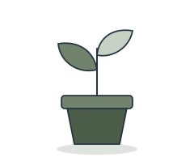
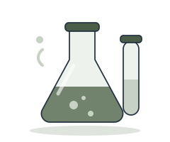
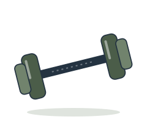
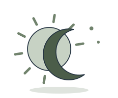
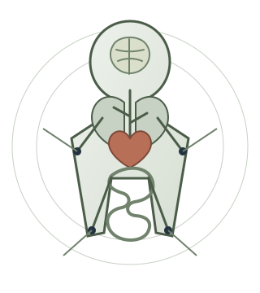
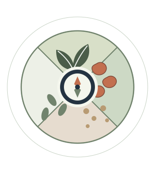

Learn deeply.
Connect the whole.
Seven courses, one thoughtful place. Move between foundational health, anatomy, nutrition science, performance and counselling practice without losing the connections between them.
Enter the collectionYour courses
Body systems, nutrition science, natural health, performance, counselling skills, vegetarian nutrition and your reading companion.
Natural Health
Fundamentals
Study all nine PDF-grounded lessons through focused teaching, flashcards, practice and the complete source tests.
Open course →
Nutrition: Studies
and Applications
Study core nutrition concepts, then connect the science to practical, everyday application.
Open course →
Sports & Fitness
Nutrition
Explore energy, recovery and performance through the lens of movement and the active body.
Open course →
Staying Healthy
with Nutrition
Bring food, lifestyle and long-term health together in a grounded reading companion.
Open course →
Nutritional
Counselling
Move through 17 course lessons—from life-cycle nutrition to communication, care planning and professional practice.
Open course →Anatomy &
Physiology
Build deep understanding through 19 interactive, textbook-grounded lessons with source quizzes ready.
Open course →
Vegetarian
Nutrition
Build confident, current practice across nutrient science, diet design and every life stage—with older source claims visibly corroborated or corrected.
Open course →